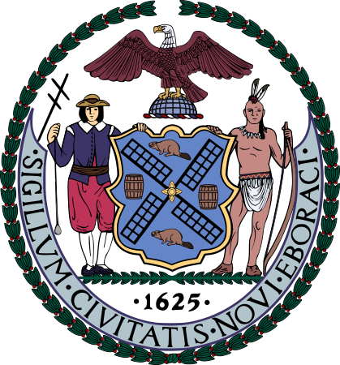
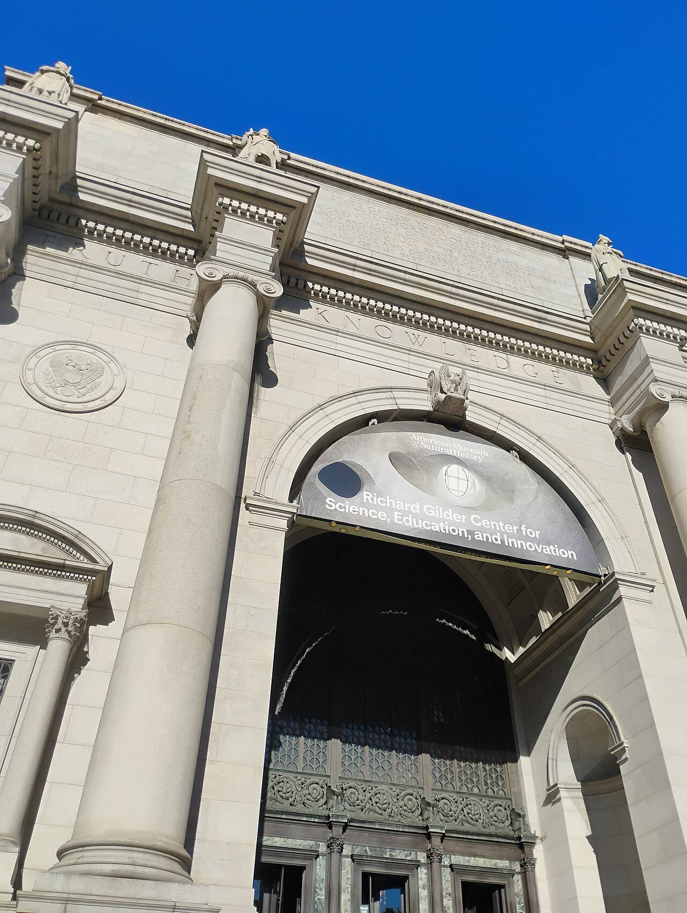
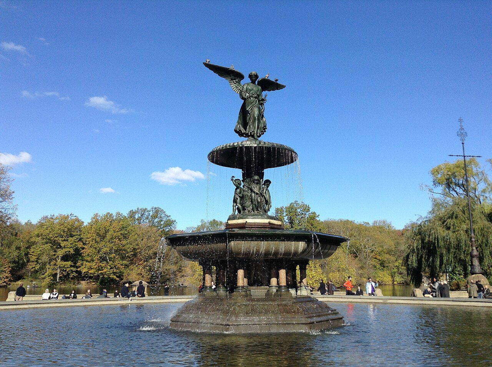
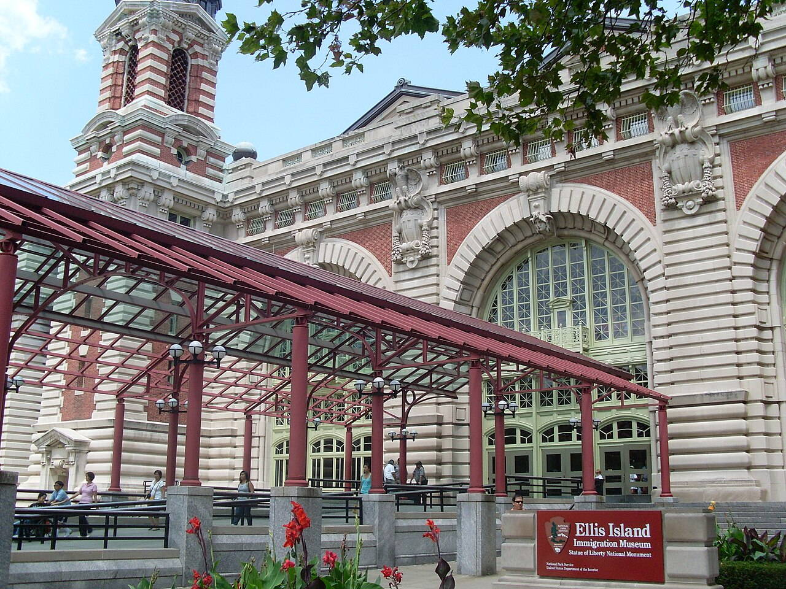
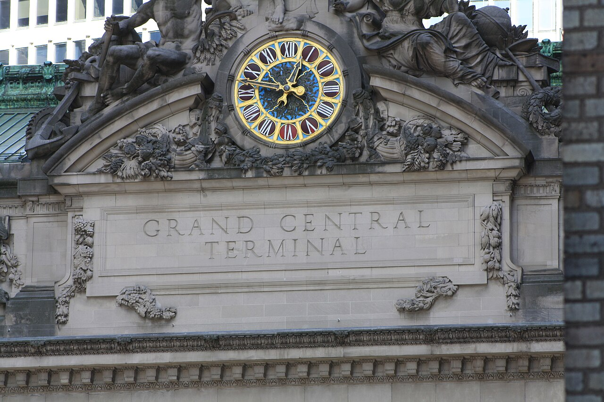
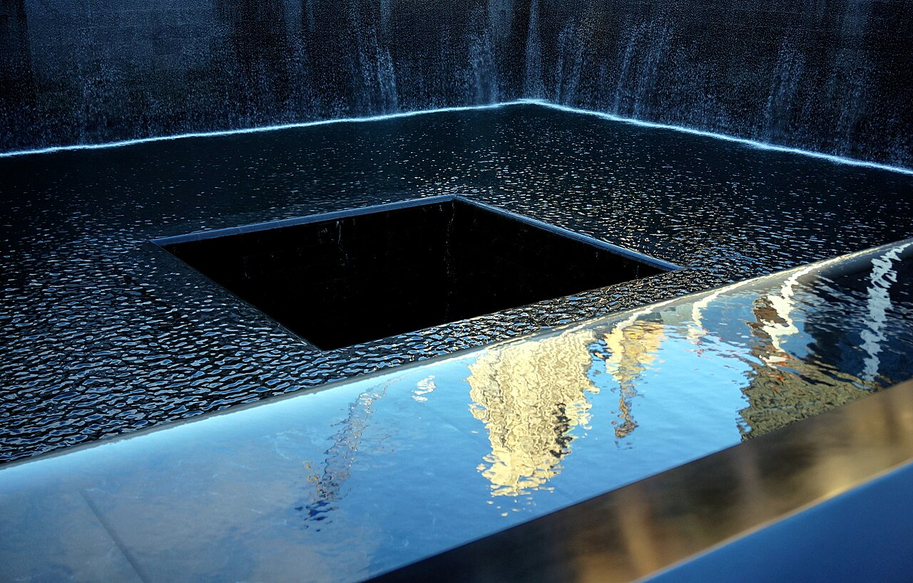
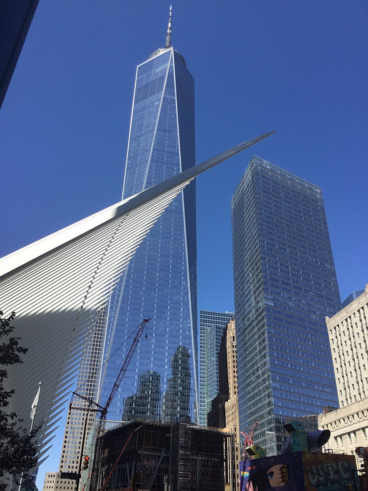
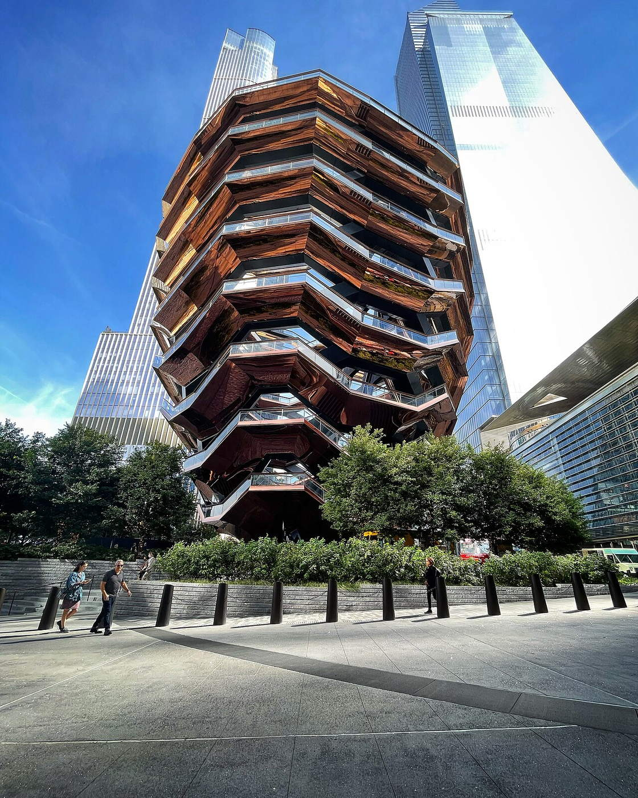
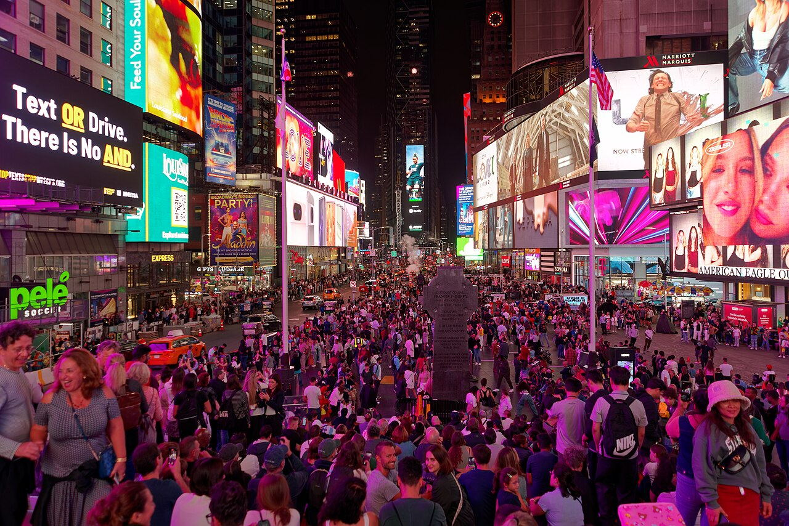
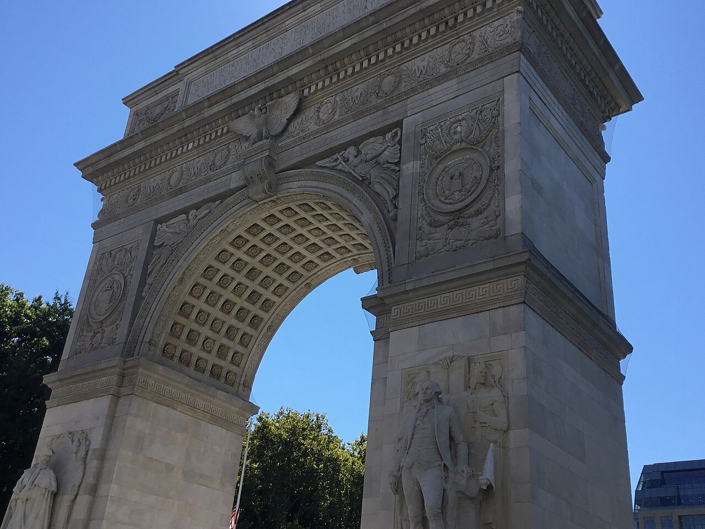

Brooklyn Bridge
East River

OTIUM is the practice of deliberate leisure. In the classical sense, otium is not escape from work but time when attention returns to memory, landscape, and thought — without a utilitarian deadline.
We shape routes for lingering, not for checklist tourism. The goal is presence in a place rather than consumption of sights.
OTIUM is not a tour operator. It is an invitation to walk, pause, and leave a route unfinished if the light on a façade deserves another minute.
City symbols

Guide. Places in this edition: 20.
Upper West Side

Central Park

East River
Art Deco skyscraper

Upper New York Bay

Midtown Manhattan
Fifth Avenue at Broadway

Midtown Manhattan

Elevated park

World Trade Center site

Stephen A. Schwarzman Building

Lower Manhattan

Midtown

Upper East Side

Fifth Avenue

Liberty Island

Fifth Avenue

Hudson Yards

Broadway and 7th Avenue

Greenwich Village
